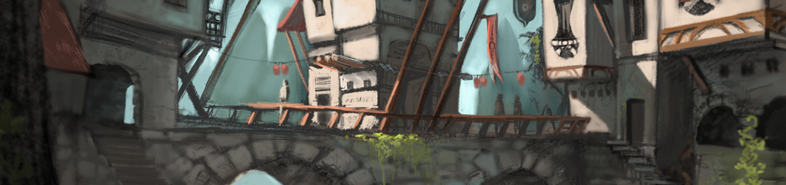

Midnight Watch is a low(ish) fantasy roleplaying server with a dangerous apocalyptic setting, a player driven economy and meaningful politics. It's world in which your characters can stake their claim through grit, cunning, diplomacy or force.
Key Features
- Centralised gameplay in a brand new city. Always easy to find someone to talk to.
- Time based skill system to take the grinding out of gameplay and reward specialisation.
- Player driven economy with fewer NPCs and enhanced crafting means you can really make your mark.
- Staff events using all of the powers that a GM can provide.
How to Play
- Read the rules and roleplaying guidelines
- Read the character creation guide and come up with an appropriate backstory for your character
- Download and extract the client bundle
- Download and install Razor
- Run Razor, select your client directory and enter the following connection details:
- Host: play.midnight-watch.com
- Port: 2593
- Logging in with an unused username will automatically create your account. Log in and have fun!
Joining the server constitutes agreement to abide by the setting and rules in place. Failure to adhere to the rules and roleplay guidelines may result in loss of access to the sever. If you have any questions or comments, get in touch with a team member on the forum, message me on steam or email me at contact AT jsrn DOT net.
Header image is a modified version of the original by David Revoy.
{kind=link}